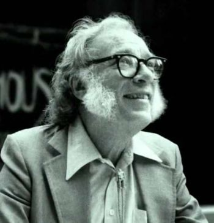

|

Isaac Asimov (born Isaak Ozimov; circa January 2, 1920 – April 6, 1992) was an American author and professor of biochemistry at Boston University, best known for his works of science fiction and for his popular science books. Asimov was prolific and wrote or edited more than 500 books and an estimated 90,000 letters and postcards. His books have been published in 9 of the 10 major categories of the Dewey Decimal Classification.
Asimov wrote hard science fiction and, along with Robert A. Heinlein and Arthur C. Clarke, he was considered one of the "Big Three" science fiction writers during his lifetime. Asimov's most famous work is the Foundation Series; his other major series are the Galactic Empire series and the Robot series. The Galactic Empire novels are explicitly set in earlier history of the same fictional universe as the Foundation series. Later, beginning with Foundation's Edge, he linked this distant future to the Robot and Spacer stories, creating a unified "future history" for his stories much like those pioneered by Robert A. Heinlein and previously produced by Cordwainer Smith and Poul Anderson. He wrote hundreds of short stories, including the social science fiction "Nightfall", which in 1964 was voted by the Science Fiction Writers of America the best short science fiction story of all time. Asimov wrote the Lucky Starr series of juvenile science-fiction novels using the pen name Paul French.
Asimov also wrote mysteries and fantasy, as well as much nonfiction. Most of his popular science books explain scientific concepts in a historical way, going as far back as possible to a time when the science in question was at its simplest stage. He often provides nationalities, birth dates, and death dates for the scientists he mentions, as well as etymologies and pronunciation guides for technical terms. Examples include Guide to Science, the three-volume set Understanding Physics, and Asimov's Chronology of Science and Discovery, as well as works on astronomy, mathematics, history, William Shakespeare's writing, and chemistry.
Asimov was a long-time member and vice president of Mensa International, albeit reluctantly; he described some members of that organization as "brain-proud and aggressive about their IQs". He took more joy in being president of the American Humanist Association. The asteroid 5020 Asimov, a crater on the planet Mars, a Brooklyn elementary school, and a literary award are named in his honor.
|